★ ★ ★ ★ ★
"The Forest Floor sock kit knit up like a dream. The colours shift just enough to keep things interesting without pooling weirdly. Already eyeing my second kit."
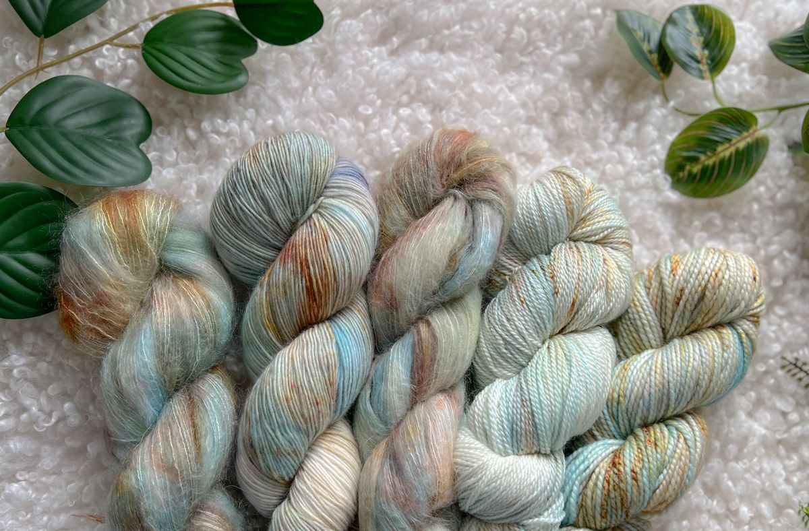
Small-batch, hand-dyed yarn and fibre — dreamt up, measured, and poured one pot at a time. From fingering-weight sock bases to cloud-soft wool-mohair bulky, every colourway is made to be cast on and loved.
A glimpse of the current collection — pieces drift past on their own, or use the arrows to take your time.
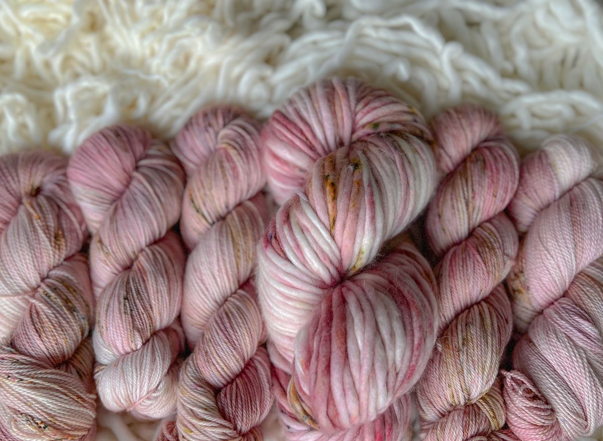
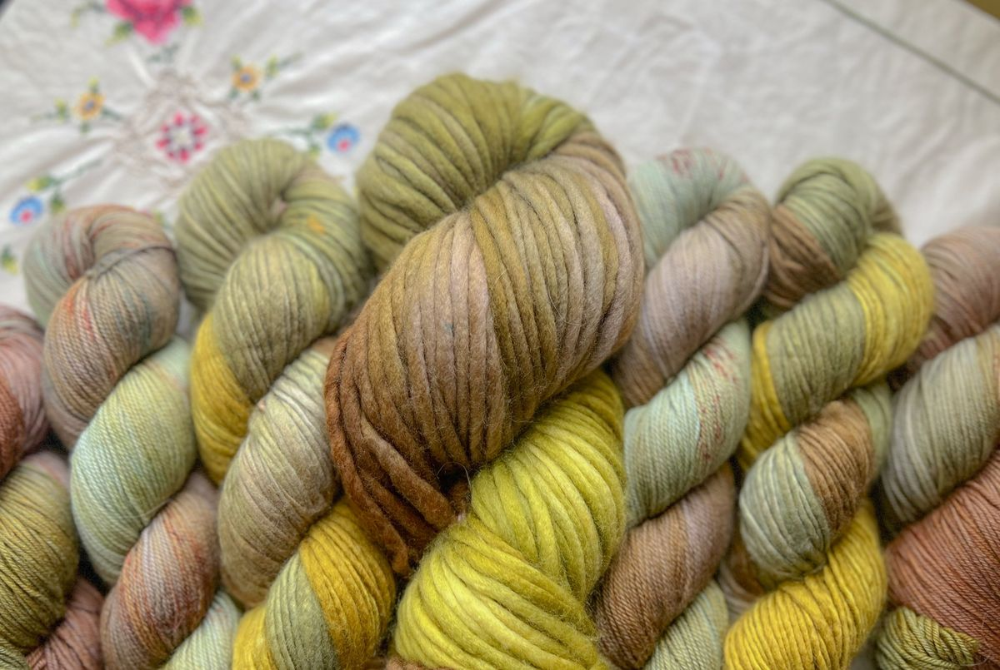
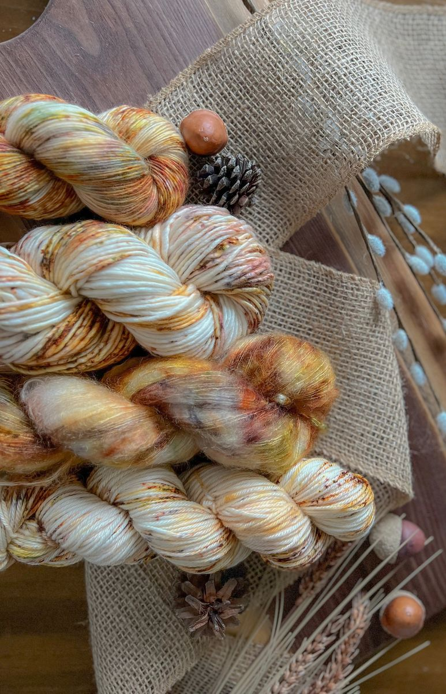
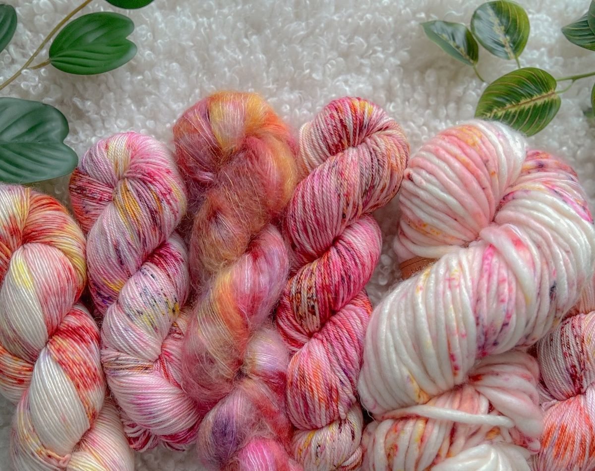
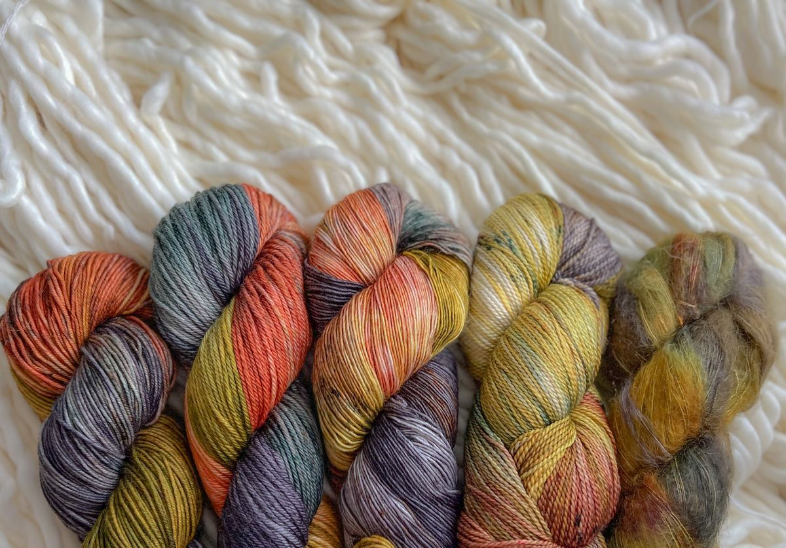
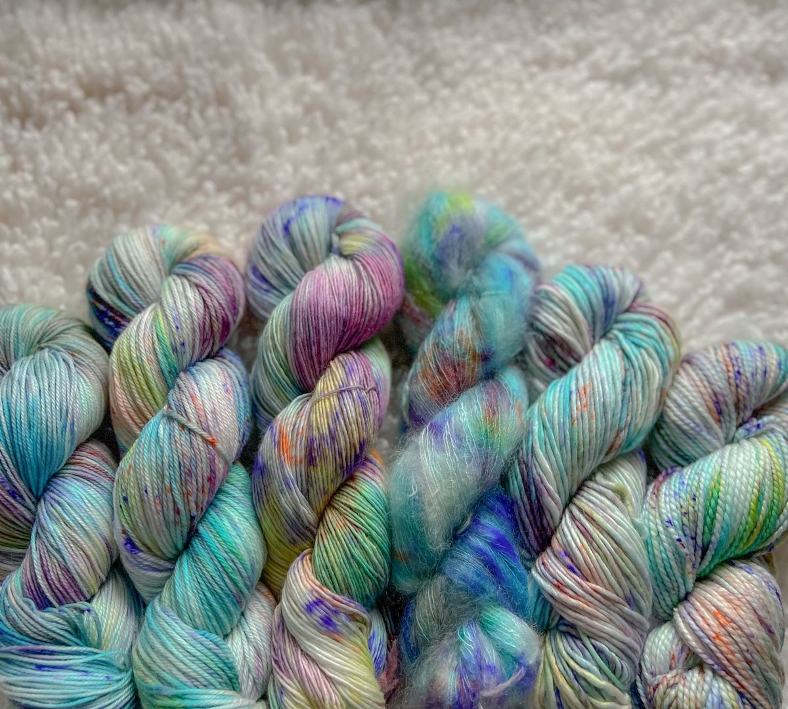
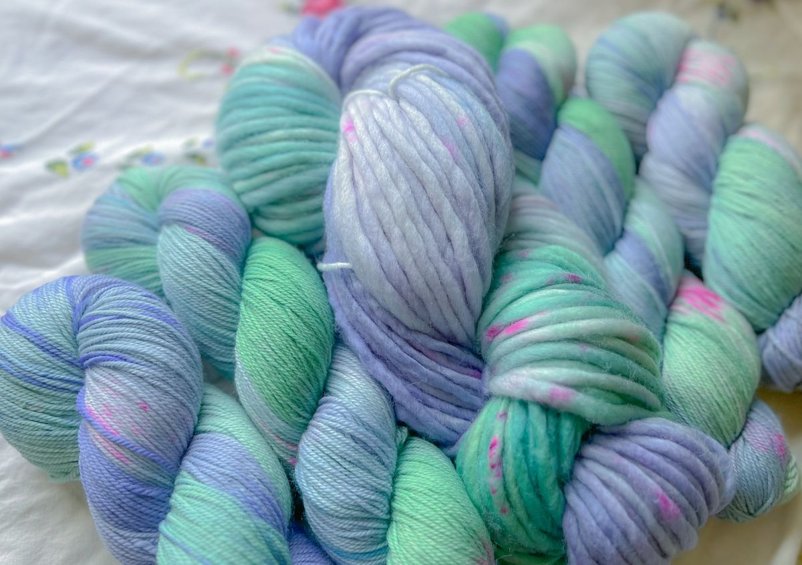
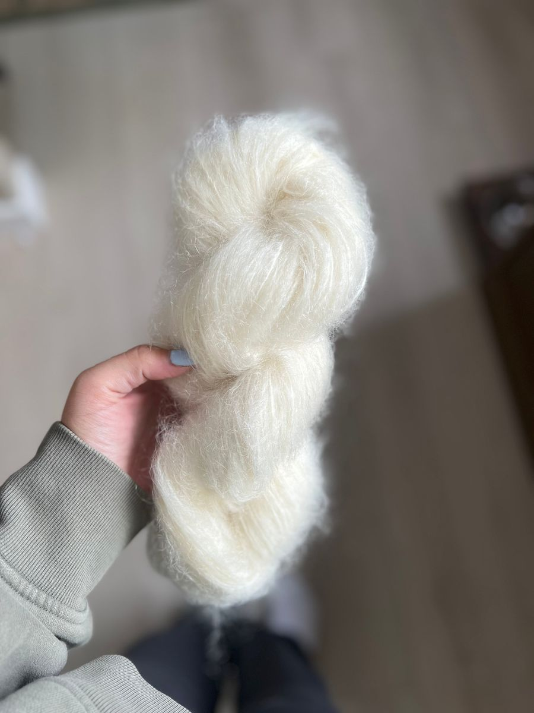
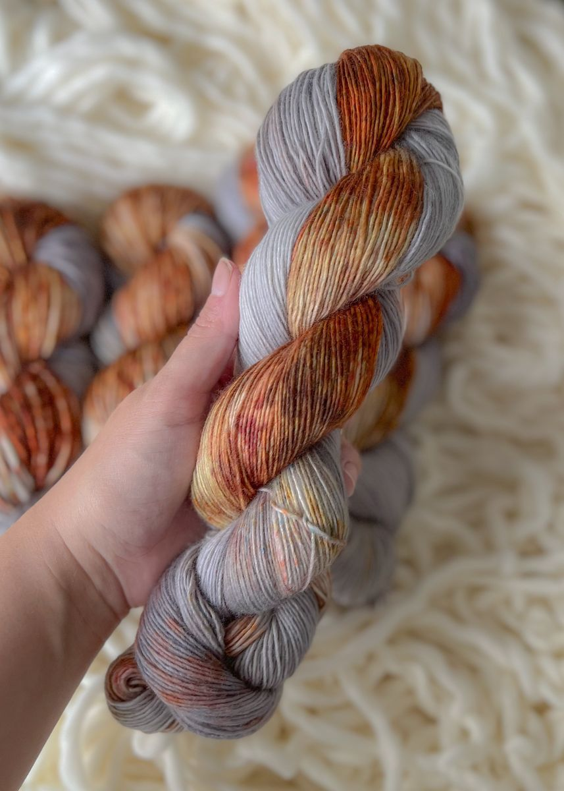
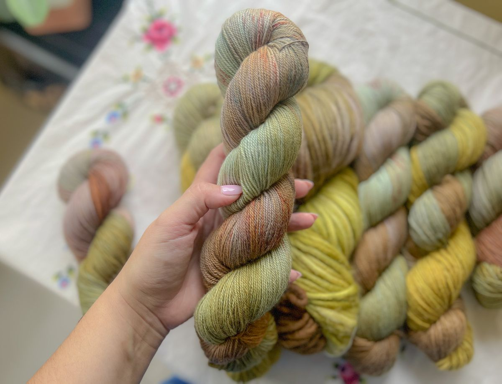
Winston Fibres Co. began in 2023 with a single dye pot, a love of colour, and a growing stash of bases waiting to come alive. Every skein is measured, wound, and dyed in small runs — which is part of the magic and part of the promise.
Read more about usWhat people are saying after casting on a Winston Fibres skein.
"The Forest Floor sock kit knit up like a dream. The colours shift just enough to keep things interesting without pooling weirdly. Already eyeing my second kit."
"Bulky wool/mohair is exactly what I'd been hunting for. Cozy, light, and the natural cream is doing the most in my new cardigan."
"I requested a custom colourway for a baby blanket and they nailed it on the first dye. Communication was lovely, packaging felt like a gift."
"Robin's Egg has the most beautiful tonal depth. Cables look incredible in it. I'm already planning a sweater's worth."
"As a crocheter I sometimes feel like the indie-dye world is knitter-first. Winston Fibres has been so welcoming and helpful with base recommendations."
"The Quad sock pack is such a treat. Four matched colourways, beautifully labelled, and they arrived faster than I expected."